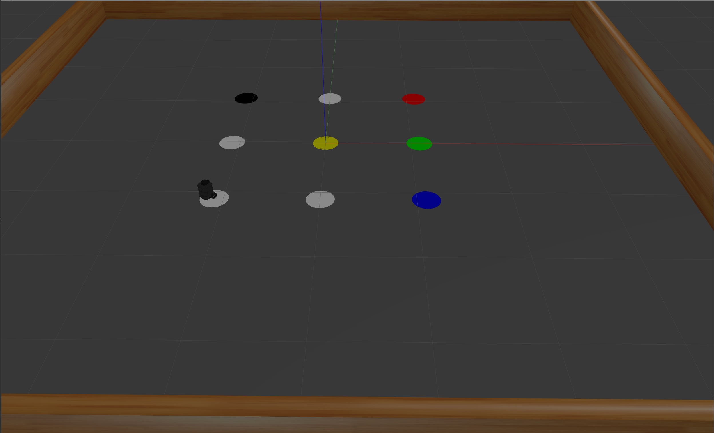

Optimized Travel Path
Shortest routes to multiple target locations, minimizing total travel distance by use of graphs (Artificial Intelligence).
Project Overview
Advanced path optimization system using graph theory and artificial intelligence algorithms to calculate the shortest routes to multiple target locations while minimizing total travel distance. The system employs sophisticated algorithms to solve complex routing problems efficiently.
Technical Implementation
Key Technologies
- Graph Theory: Mathematical modeling of routing problems using nodes and edges
- Artificial Intelligence: Machine learning algorithms for path optimization
- Shortest Path Algorithms: Dijkstra's, A*, and other pathfinding algorithms
- Multi-Objective Optimization: Balancing multiple constraints and objectives
- Real-time Processing: Dynamic route calculation and updates
Applications
- Logistics: Delivery route optimization for vehicles
- Robotics: Autonomous robot navigation and path planning
- Transportation: Public transport and traffic optimization
- Supply Chain: Warehouse and distribution center optimization
- Emergency Response: Optimal routing for emergency vehicles
Benefits
- Cost Reduction: Minimized fuel consumption and travel time
- Efficiency: Optimized resource utilization
- Scalability: Handles large-scale routing problems
- Adaptability: Real-time adjustments based on changing conditions